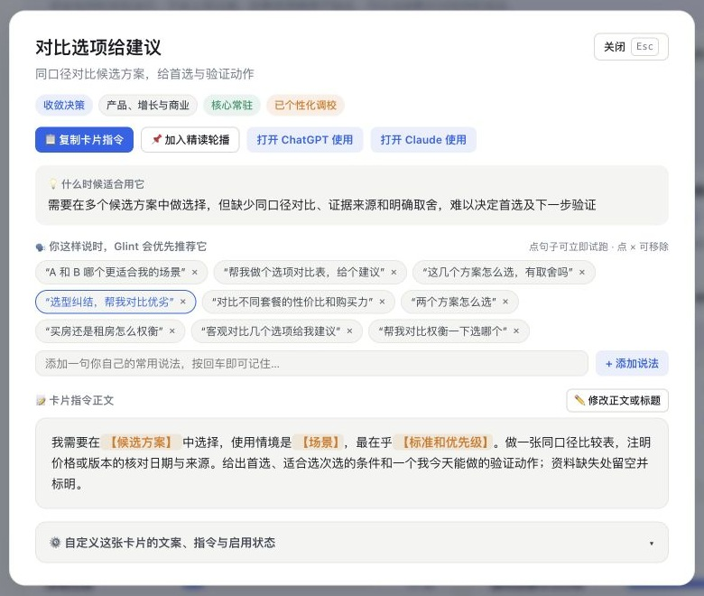
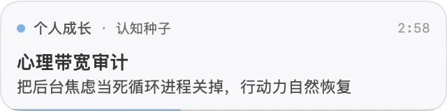

软件 / macOS 应用
Glint · 微光
从零散念头到结构化任务
在你工作的地方，选一个合适的思考方法，把模糊意图展开成可交给 AI 执行的任务。
这是什么
想说“帮我想想”时，你可能需要的是拆解问题、检验假设或比较方案。Glint 用本机检索在当前工作位置召回相应的认知卡片，帮助你选择思考方法、补齐问题与约束，再把可填写的提示词、清单或资料复制、插入当前输入框。桌面的认知种子小窗则带来尚未主动寻找的新视角。
核心功能
- 快捷键呼出三张认知卡片，支持注入提示词、查看清单与打开资料
- 本机混合检索与重排，结合认知语言工程及多个图谱资料库
- 桌面认知种子轮播，可跳过、暂时隐藏、屏蔽或展开阅读
- 卡片变量就地填写，一键复制或跳转至 AI 工具
- 本地管理台统一整理货架、供给、使用反馈与轮播策略
界面截图

